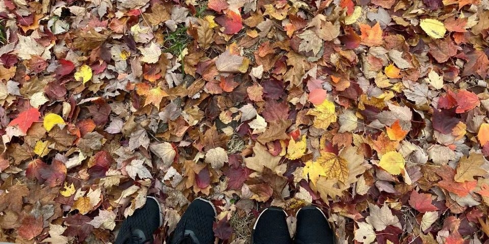
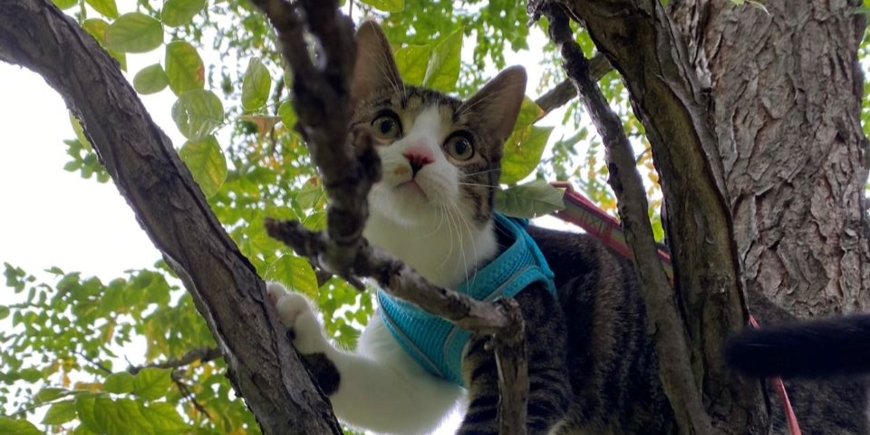
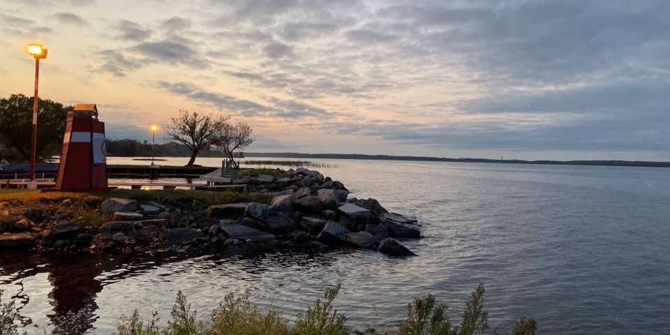
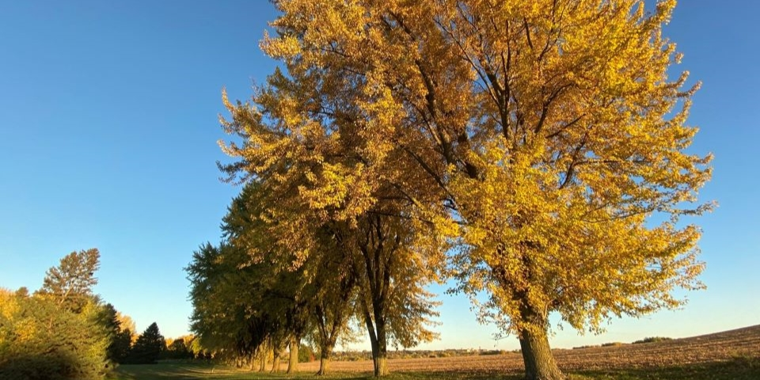

My journey
University of Texas at Dallas
M.S. in Computer Science, earned Dec. 2021
UTDallas presented me unprecedented scale and diversity of opportunity. It has gifted me with a love for learning and strengthenth to adversity.
Not only completed different school projects through different programming languages, but also implemented several popular algorithms and data structures.
Also received systematic training in machine learning field, information retrieval, data mining and bigdata management.

Amazon Web Service
SDE intern, May 2021 - Aug. 2021
The team I was working focus on the CodeBuild, my goal is upgrade the workflow to a higher level by using other team's services, to make SDE's life easier. Generally speaking, it takes couple of hours for SDE to help customer in the current model, in the future model, it will take few minutes.
This intern project involves multiple teams, many communications and micro services. I successed at last and received strong positive feedback from the whole team. But I was more happy becuause my work will help the SDEs and customers.
I won't say this experience is an easy trip, I did think about giving up. At last when I successed, I want to thank it since it let me learn so many things not only the codeing work, but more important, how to work as a SDE.
My personal life
-

I like hiking with my wife.
-

We have a cat name Kaka, he is a party boy.
-

I like travel, experience different options.
-

Fall is my favorite season.
all work © Jian Wang 2022